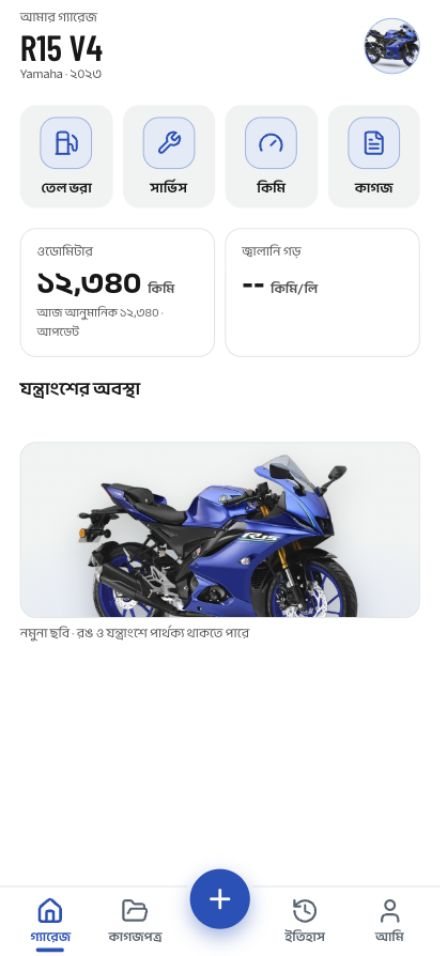

MotoVault P00 baseline evidence
24 October 2026, Asia/Dhaka. Synthetic records only. Native base: 50eda3a, isolated app identity com.motovault.baseline.p00.
Verification report · Comparison and discrepancies · Runtime metadata
Columns: prototype / Android / iOS
unknown-service

prototype: unknown-serviceandroid: unknown-serviceios: unknown-serviceMotion and operation evidence
Prototype sampled sequence: gauge-and-countupPrototype sampled sequence: normal-sheet-openPrototype sampled sequence: reduced-motion-sheet-closePrototype sampled sequence: reduced-motion-sheet-openPrototype sampled sequence: save-and-undo-toastPrototype sampled sequence: save-undo-retry-toastPrototype sampled sequence: undo-restores-12340android: continuous native capture; includes the observed Undo defectios: continuous native capture; includes the observed Undo defect